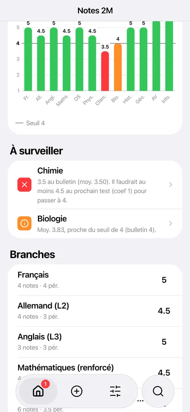

Ta moyenne et ta promotion au gymnase vaudois, calculées comme sur ton bulletin
Note tes tests au fil de l'année. Notes fait l'arrondi au demi-point, vérifie les trois règles de promotion et, en 3e année, celles du certificat de maturité ou de l'ECG.
Gratuit, sans compte, sans publicité. Application non officielle. Résultats indicatifs : seul ton bulletin fait foi.


Ce que fait l'app
Tes règles, à chaque note
Une tuile par condition de promotion ou du certificat : tu vois tout de suite si tu passes, et de combien.
Chaque branche en détail
Moyenne exacte, note de bulletin arrondie, courbe de l'année et note à viser au prochain test.
Ce qu'il faut surveiller
Les branches sous 4 ou proches du seuil remontent en tête, avec la note qu'il te faut pour repasser à 4.

Comprendre les règles
- Promotion en 1re et 2e annéeTotal, groupe de 16 points, notes sous 4
- Moyenne d'une brancheMoyenne cumulée, arrondi au demi-point, TP
- Certificat de maturitéDouble compensation, 56 points, examens
- École de culture générale (ECG)Promotion, domaines et certificat ECG
- Travaux assimilés (TA)Plusieurs évaluations, une seule note
L'app
- Installer sur iPhone ou AndroidDepuis le navigateur, sans App Store
- ConfidentialitéTes notes restent sur ton téléphone
- Questions fréquentesGratuité, gymnases, fiabilité
- Plaintes et améliorationsUne erreur, une idée : dis-le
Pour qui ?
Pour les élèves de l'École de maturité vaudoise (1re, 2e et 3e année, toutes les options spécifiques et complémentaires) et de l'École de culture générale (ECG, six domaines). L'école de commerce arrive bientôt.
Notes est un projet indépendant, fait par un élève. Il n'est ni édité ni validé par le canton ou par un gymnase.
En bref
- Tout est calculé comme au bulletin : moyenne cumulée depuis la rentrée, pondérée par les coefficients, arrondie au demi-point (4.25 donne 4.5).
- Promotion en 1re et 2e : total d'au moins 4 × le nombre de notes, groupe d'au moins 16 points, 4 notes insuffisantes au plus.
- Certificat de maturité en 3e : 56 points avec double compensation, 4 notes insuffisantes au plus, 38.5 points aux examens.
- Sans compte : tes notes restent sur ton appareil. La synchronisation entre appareils est facultative et chiffrée.
- Hors connexion : une fois installée, l'app s'ouvre même sans réseau.